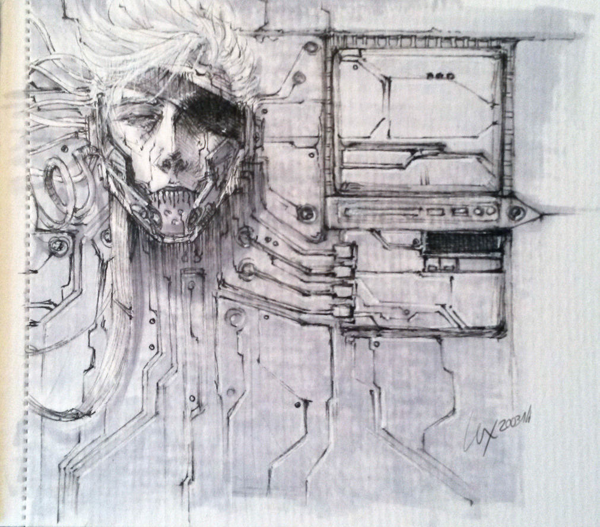

warhead.jpg
Doodle from my scetchbook, done while being on the train.
ShinHan markers: Cool Grey 1&2, copic multiliner 0.2 on heavy, structured paper 8)
122 NOTES ARE YOU FUCKING KIDDING ME
I don’t know what poked you all about it to fav and reblog, but hey! Thanks! Feels nice that so much people like it :D
I still love this thing
This is incredible… and disturbing… and moving… and cool… all at once. Nicely done!